Apple Sağlık’tan koşular ve bisiklet sürüşleri
Herhangi bir uygulamadaki kardiyo; rota haritası, tempo ve nabız bölgeleriyle görünür.
iPhone ve Apple Watch için güç antrenmanı
Her seti saniyeler içinde kaydet, her rekoru gör ve haftanı bir yapay zeka koçu planlasın. Replex antrenmanı gözle görülür ilerlemeye dönüştürür.
Ücretsiz başla. Pro; yapay zeka koçunu, kendi programlarını ve tüm geçmişini ekler.
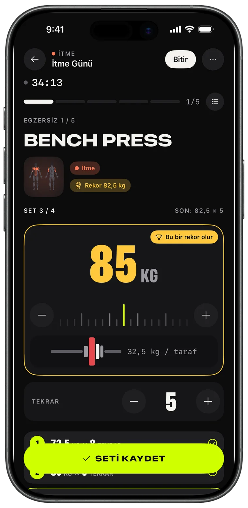
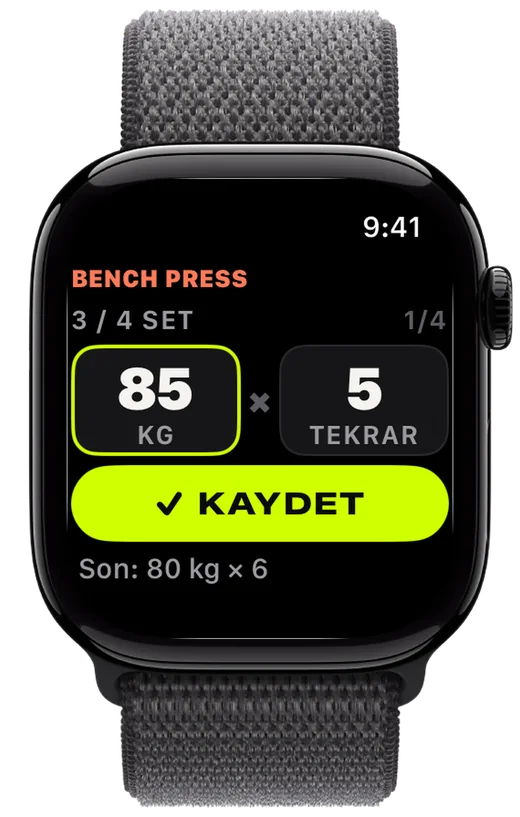
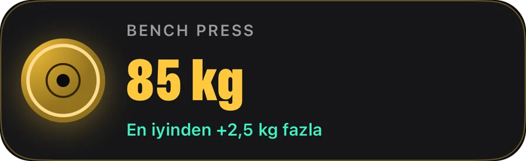
Kayıt
Plakaları ayarla, seti kaydet, geçen seferi geç. Replex ne kaldırdığını hatırlar ve sen hazır olmadan sonraki seti hazırlar.
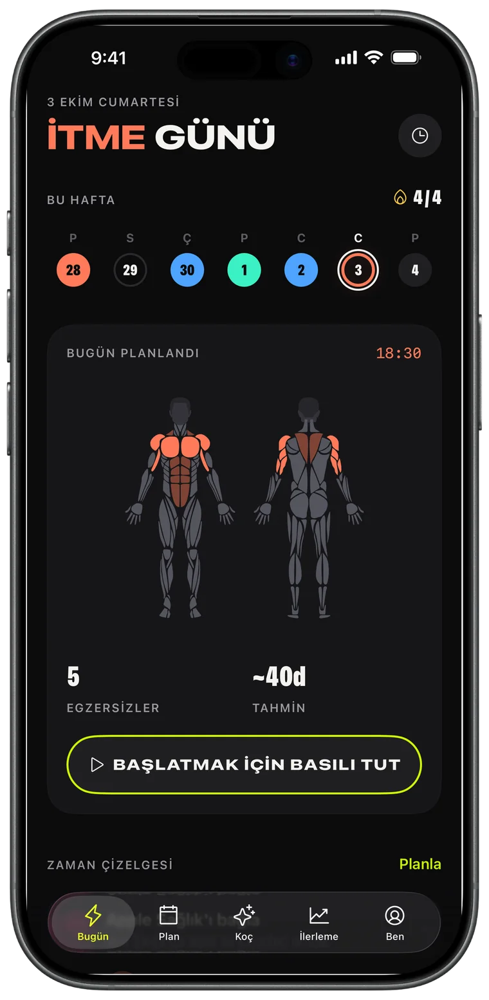
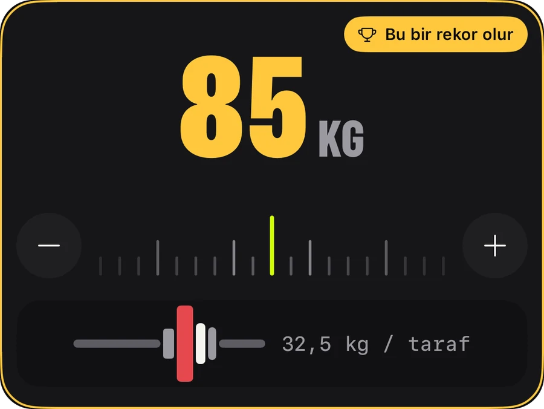
Apple Watch
Telefonu çantada bırak. Ağırlığı ve tekrarı ayarlamak için Digital Crown’u çevir, KAYDET’e dokun; iPhone’un gerçek zamanlı olarak eşzamanlı kalır.
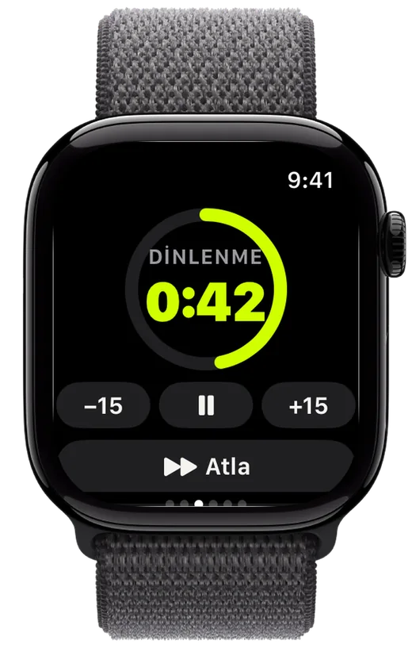
İlerleme
Haftadan haftaya artan hacim, kırdığın her rekor ve her hareketin trendi – emeğinin karşılığını aldığını görürsün.
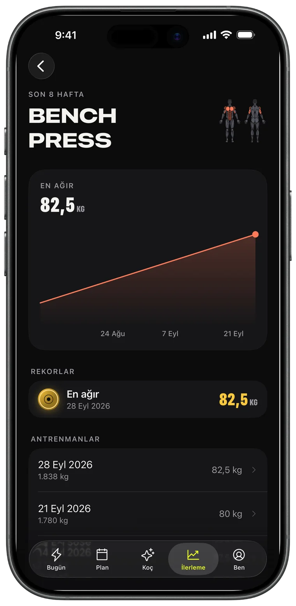
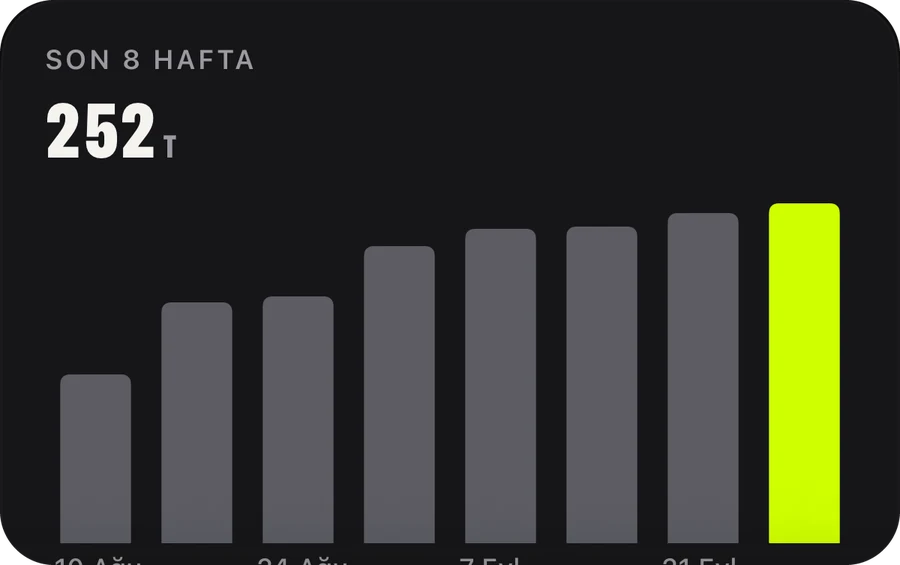
Yapay zeka koçu · Pro
Bir hafta iste, takvimine eklensin. Koç gerçek antrenmanlarını – seansları, rekorları, koşuları – okur ve planı bunlara göre yapar.
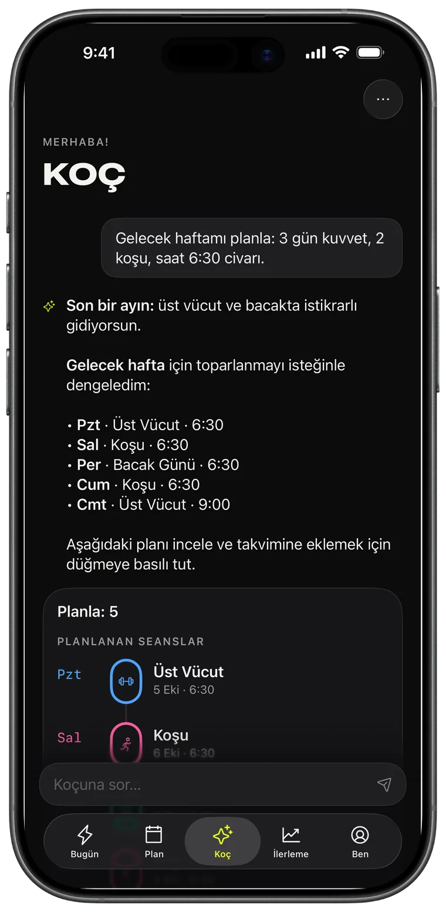
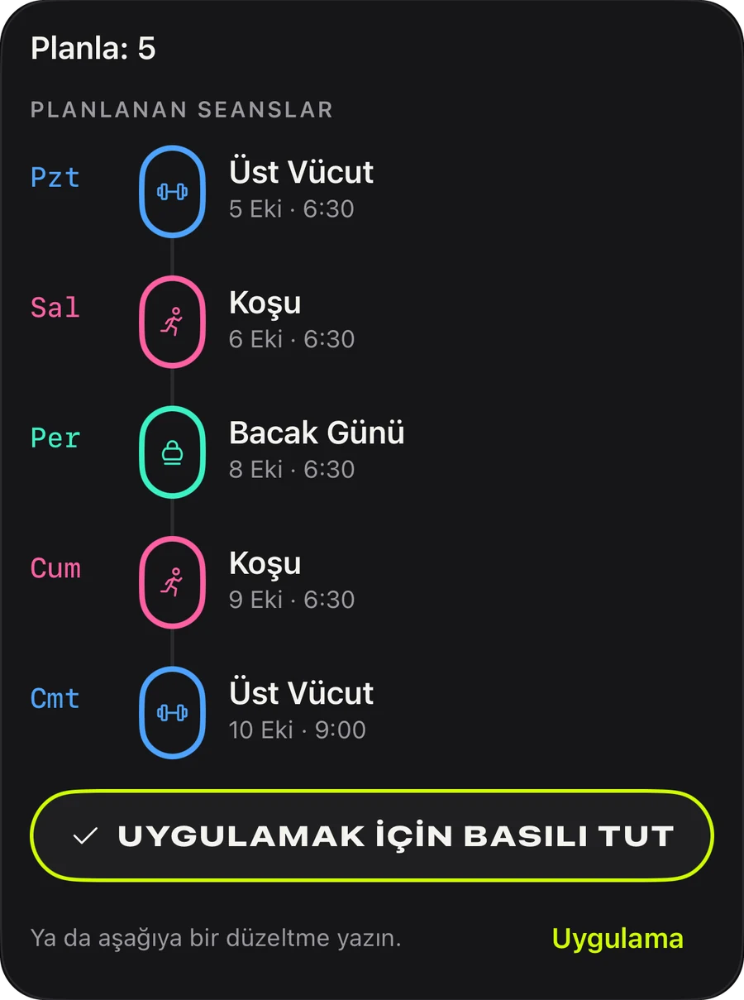
Programlar
İtme, çekme, bacak, üst/alt vücut, tüm vücut: bugün başlayabileceğin 44 hazır program ya da kendi programını kur ve tekrarlansın.
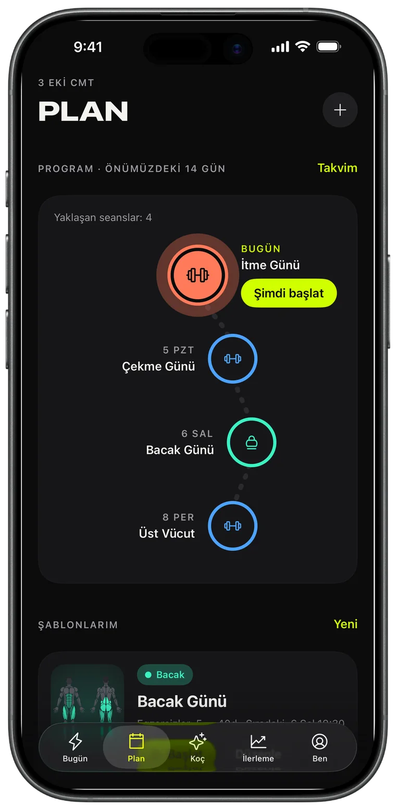
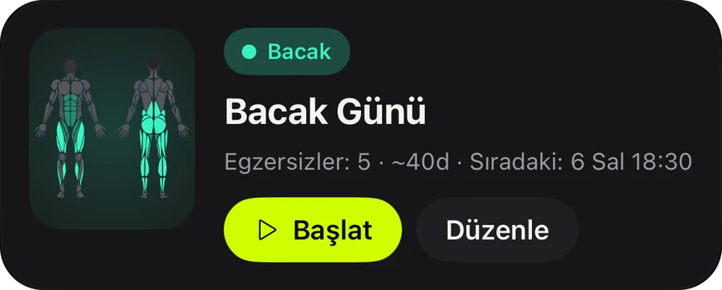
Paylaş
Biten her antrenman; hacmin, süren ve rekorlarınla bir story kartına dönüşür. Paylaş ya da kanıt olarak sakla.
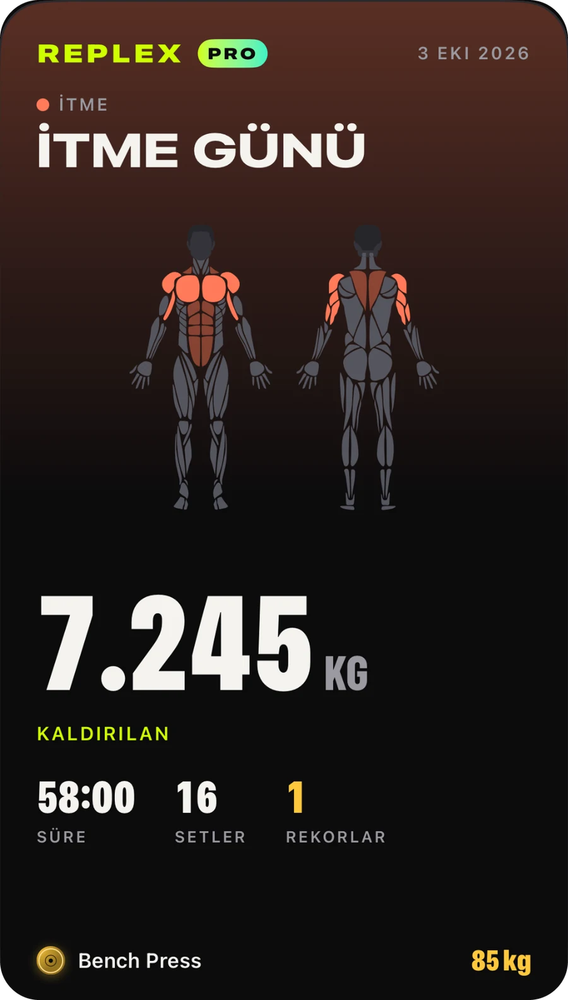
Herhangi bir uygulamadaki kardiyo; rota haritası, tempo ve nabız bölgeleriyle görünür.
Setin, dinlenmen ve nabzın Kilitli Ekran’da ve Dynamic Island’da.
Antrenmanlar, şablonlar ve programlar tüm cihazlarında, yalnızca sana özel.
Başlamadan önce bir seansın neyi çalıştırdığını, bu hafta hangi kasları çalıştırdığını gör.
Kilogram, pound veya stone; vücut ağırlığı ve süreli hareketler yerleşik.
Açık veya koyu ve üç vurgu rengi: Volt, Mavi ve Pembe, uyumlu uygulama simgeleriyle.
Kayıt tutmak ve ilerlemek için ihtiyacın olan her şey.
Önceden plan yapanlar için.
Pro, uygulama içinde aylık, yıllık veya tek seferlik ömür boyu satın alma olarak sunulur. Abonelikler Apple Hesabı’ndan istediğin zaman iptal edilebilir.
Replex’i indir ve ilk antrenmanını bir dakikadan kısa sürede kaydet.
Hayır. Replex iPhone’da tam olarak çalışır. Apple Watch ile setleri kaydedebilir, dinlenme zamanlayıcısını çalıştırabilir ve nabzını bileğinden takip edebilirsin.
Evet. Replex’i ücretsiz kullanabilirsin: kayıt, dinlenme zamanlayıcısı, 5 vücut ağırlığı programı, son antrenmanlarının rekorları ve 5 Apple Watch antrenmanı. Replex Pro – aylık, yıllık veya tek seferlik ömür boyu satın alma – yapay zeka koçunu, 44 programın tamamını, kendi şablonlarını ve planlamayı, tam geçmişi ve sınırsız Watch antrenmanını ekler.
Cihazlarında ve özel iCloud’unda. Antrenmanlar Apple Sağlık’a da kaydedilebilir. Yapay zeka koçu yalnızca sana yanıt vermek için gerekeni ve yalnızca sen sorduğunda görür.
Kilogram, pound veya stone; plaka hesaplayıcı da seçtiğin birimi kullanır.
54 dil; aralarında İngilizce, İspanyolca, Portekizce, Fransızca, Almanca, Japonca, Korece, Çince, Arapça ve İbranice var.